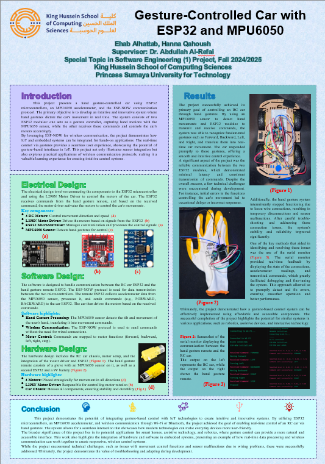
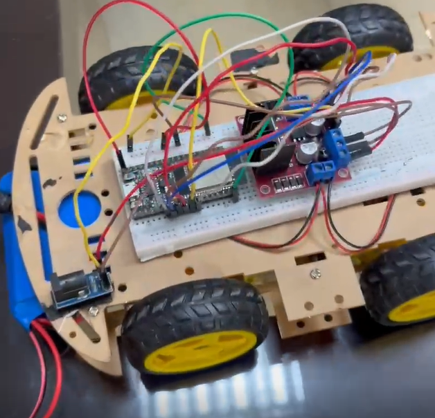
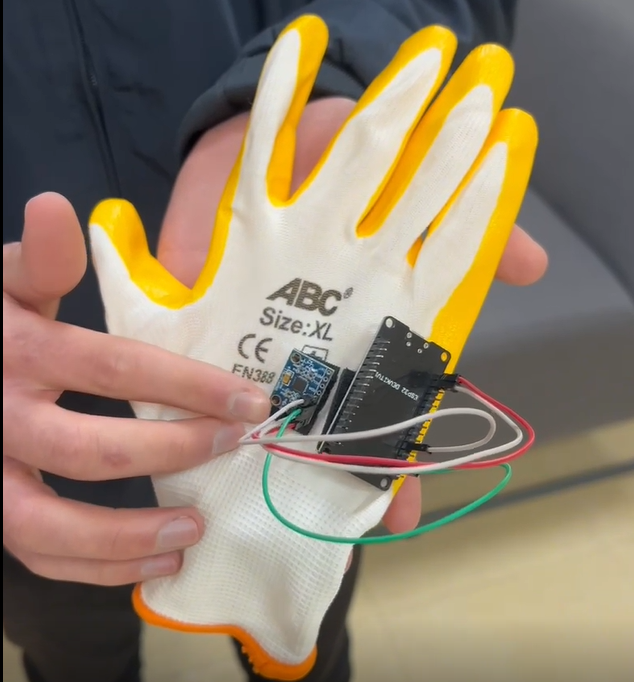
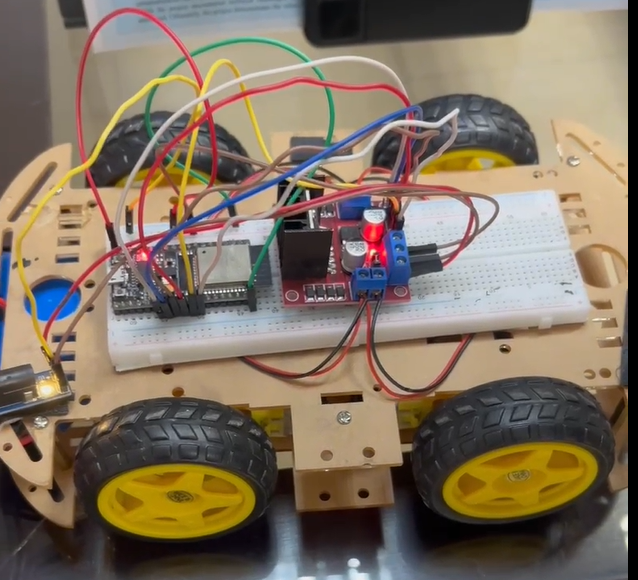

Gesture Car - ESP32 Controlled Vehicle
Project Overview
Gesture Car is an IoT-based project that enables real-time control of an ESP32-powered
car using hand gestures. It utilizes an MPU6050 accelerometer to detect movement, and communicates
between two ESP32 modules using ESP-NOW. One ESP32 interprets the gesture input while the other
translates it into directional commands that control the car's motors.
Implemented Features
- Gesture Detection: Hand motion captured via MPU6050 sensor
- Wireless Control: ESP-NOW protocol for peer-to-peer communication
- Motor Control: Real-time control of four motor directions using ESP32
- Speed Management: Dual-speed logic for turns and direction changes
- Wi-Fi Connectivity: Required for Blynk and ESP-NOW setup
- Secure Communication: MAC address binding to prevent cross-control
- Feedback: Serial output logs commands and status for debugging
Project Photos




Demonstration Video
Final Project — Special Topic In Software Engineering 1
Princess Sumaya University for Technology